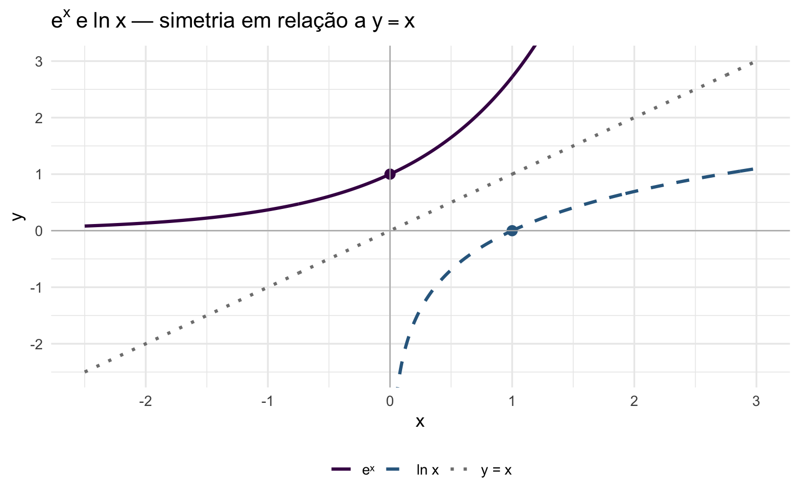

library(ggplot2)
x_exp <- seq(-2.5, 3, length.out = 400)
x_ln <- seq(0.05, 3, length.out = 400)
x_ref <- seq(-2.5, 3, length.out = 400)
df <- data.frame(
x = c(x_exp, x_ln, x_ref),
y = c(exp(x_exp), log(x_ln), x_ref),
fun = c(rep("eˣ", 400), rep("ln x", 400), rep("y = x", 400))
)
ggplot(df, aes(x, y, color = fun, linetype = fun)) +
geom_line(linewidth = 1.1) +
geom_point(data = data.frame(x = 0, y = 1, fun = "eˣ"),
aes(x, y), color = "#440154", size = 3) +
geom_point(data = data.frame(x = 1, y = 0, fun = "ln x"),
aes(x, y), color = "#31688e", size = 3) +
coord_cartesian(xlim = c(-2.5, 3), ylim = c(-2.5, 3)) +
geom_hline(yintercept = 0, color = "gray70", linewidth = 0.4) +
geom_vline(xintercept = 0, color = "gray70", linewidth = 0.4) +
scale_color_manual(values = c("eˣ" = "#440154", "ln x" = "#31688e", "y = x" = "gray50")) +
scale_linetype_manual(values = c("eˣ" = "solid", "ln x" = "dashed", "y = x" = "dotted")) +
labs(title = expression(e^x ~ "e" ~ ln~x ~ "— simetria em relação a" ~ y == x),
x = "x", y = "y", color = NULL, linetype = NULL) +
theme_minimal(base_size = 13) + theme(legend.position = "bottom")